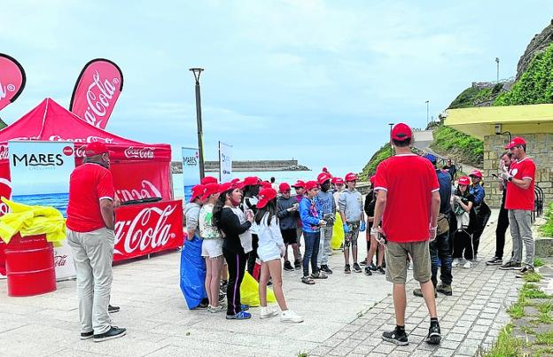

Aquí podrás leer información sobre algunos proyectos y voluntariados en los que participé.
Voluntariado de limpieza

Descripción
En marzo de 2017, llegó un terrible huracán a los pueblos de la costa norte, y varias playas se llenarón de ramas y distintos residuhos; entre ellas la de Orio. Es por ello que el ayuntamiento del pueblo decidió organizar una quedada en la misma playa, para poder recoger los distintos objetos llegados a la playa. Fueron más de 80 habitantes los que se acercarón a la playa de Orio para colaborar en el voluntariado.
¿Que me empujó ha hacerlo?
Decidí acudir a dicha quedada, al fin y al cabo se trataba de nuestra playa, por lo que eramos nosotros quienes debían limpiarla. Estos últimos años el planeta está sufriendo más que nunca con todo el tema del medioambiente, y en cierto modo fué eso lo que me empujó a colaborar, ya que al igual que la playa es nuestra, el planeta también.
Recaudación de alimentos
Descripción
Hace unos cuantos años cuando todavía estudiaba en la escuela de Orio, cada año solíamos organizar una recaudación de alimento para los niños de Sahara. Esta recaudación se llebava a cabo de la mano de todos los estudiante de Orioko Herri Ikastola, y conseguiamos mandar cientos de cajas repletos de arroz, legumbres, pasta...
¿Que me empujó ha hacerlo?
Esta recaudación todos los años solía ser voluntaria, pero aún así, cada año intentaba recaudar todos los alimentos posibles para ayudar a las personas que lo necestitaban. Al fin y al cabo, no me costaba nada hacerlo, y para aquellos a los que iba dirigida la comida, era muy necesario.
Hoy en día se sigue llevando a cabo esta recaudación
"La semana del 13 de febrero los alumnos y alumnas de 6º de Primaria nos comentaron en clase el comienzo de la campaña de solidaridad con el pueblo saharaui. A cada alumno se le entregó un papelito en el que se indicaba qué alimentos podía aportar: latas de bonito y sardina, arroz, azúcar, legumbres y compresas. Desde entonces las cajas de cartón se han llenado de comida en la Herri Ikastola de Orio"
Podeis leer el árticulo entero pinchando aquí.